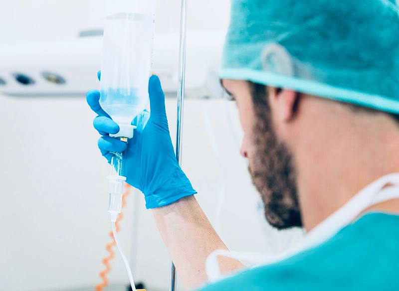

+380(97) 369 76 65
+380(97) 369 76 65Лікування алкоголізму в Києві
Ми успішно впораємося з лікуванням алкоголізму завдяки нашим перевіреним методів.
Працюємо в Одесі, Києві, Львові, Харкові, Дніпрі, Запоріжжі


Безкоштовна консультація, працюємо цілодобово 24/7
Ми успішно впораємося з лікуванням алкоголізму завдяки нашим перевіреним методів.
Працюємо в Одесі, Києві, Львові, Харкові, Дніпрі, Запоріжжі
| Послуга Ціна | |
|---|---|
| Лікування алкоголізму Київ | Від 1499 грн |
| Крапельниця від алкоголю | Від 1499 грн |
| Виведення із запою | Від 1500 грн |
| Лікування пивного алкоголізму Київ | Від 1499 грн |
| Лікування жіночого алкоголізму | Від 2000 грн |
| Кодування від алкоголізму | Від 4500 грн до 17000 грн |
| Кодування за методом Довженка | Bід 4500 грн до 12000 грн |
| Кодування уколом | Від 10000 грн |
| Підшивка від алкоголю | Від 10 000 до 17 000 гривень |
Це тривалий процес, що включає використання лікарських препаратів та психотерапевтичних методів, спрямованих на повну відмову пацієнта від алкоголю. Кількість людей, які страждають на алкогольну залежність, продовжує зростати. Багатьом із них важко відмовитись від цієї шкідливої звички. Тільки досвідчені наркологи можуть допомогти досягти довічної тверезості.
Алкогольна залежність формується поступово, тому важливо розпізнати її ранніх стадіях. До основних ознак алкоголізму можна віднести регулярне вживання спиртного, необхідність збільшення дози, відсутність почуття провини за пропуск важливих справ та втрату контролю за кількістю випитого.
Людина, яка страждає на алкоголізм, не може провести жодного дня без алкоголю. Спочатку він шукає прийменники для вживання, але згодом привід стає не важливим. Залежний більше бачить сенсу своєму дні без спиртного.
Раніше людині вистачало однієї баночки пива, але тепер це може перерости в десяток. Це призводить до розвитку так званого пивного алкоголізму.
Алкоголь стає важливішим за сім’ю та роботу. Людина намагається уникнути відповідальності і віддає перевагу випивці будь-якої іншої діяльності. Часто це веде до сімейних конфліктів та насильства.
Спочатку людині здається, що вона контролює ситуацію, але незабаром вона втрачає здатність зупинитися після перших чарок.
Алкоголізм проходить кілька етапів, з кожним з яких стан людини погіршується, а міцнішає залежність. Поділ алкоголізму на стадії допомагає визначити ступінь проблеми та підібрати правильне лікування.
На цьому етапі залежність тільки починає розвиватися і її складно розпізнати як проблему. Людина п’є для зняття напруги, підняття настрою або компанії. Поступово йому потрібно більше алкоголю, щоб досягти колишнього ефекту.
Навіть якщо планується випити небагато, людина часто перевищує заплановану дозу. Він починає шукати приводи для споживання алкоголю без видимих причин. На цій стадії залежність можна виправити зміною звичок і за допомогою консультацій лікаря.
На другій стадії залежність стає більш вираженою та помітною для оточуючих. Алкоголь починає суттєво впливати на життя людини: як професійне, так і особисте. При відмові від алкоголю виникають абстинентні симптоми, такі як нудота, тремор, тривога, дратівливість та головний біль.
Часто періоди тривалого вживання алкоголю змінюються короткими періодами тверезості. На цій стадії особливо важливо вивести людину із запою. Відбувається погіршення відносин із близькими, виникають труднощі на роботі, знижується інтерес до колишніх захоплень. Навіть при розумінні проблеми людина вже не може контролювати своє бажання випити.
На цій стадії потрібне серйозне втручання. Чим раніше почнеться лікування, тим вищі шанси на успішне одужання. Найбільш ефективним методом є кодування від алкоголю.
Остання стадія алкоголізму характеризується повною втратою контролю за вживанням спиртного. Алкоголь керує всім життям людини. На цьому етапі організм серйозно страждає, відбувається руйнування всіх внутрішніх систем. Людина вже не може прожити без алкоголю і починає пити вранці, щоб усунути абстинентні симптоми.
Часто цьому етапі виникають психічні розлади, такі як психози, депресії, галюцинації. Алкоголь призводить до хронічних хвороб: цирозу печінки, серцевої недостатності, виразки шлунка, проблем із підшлунковою залозою. Також можливий розвиток алкогольних енцефалопатій – порушень роботи мозку, що призводять до зниження когнітивних функцій. Людина втрачає роботу, сім’ю та друзів, залишаючись наодинці із залежністю.
Лікування цієї стадії стає складнішим, оскільки необхідно як позбутися залежності, а й відновити роботу внутрішніх органів. Госпіталізація стає єдиним виходом. Однак навіть на пізній стадії залишається шанс на одужання за грамотного підходу до терапії.
Найдієвіший спосіб лікування алкоголізму - це кодування, яке включає використання препаратів-блокаторів, що знижують потяг до спиртного, або засобів, що викликають сильне отруєння при прийомі алкоголю. Крім цього, необхідно пройти курс психотерапії, щоб змінити мислення пацієнта та допомогти йому жити тверезим життям.
Ціна лікування алкоголізму залежить від багатьох факторів: від тривалості залежності, стадії захворювання, супутніх хвороб та загального стану здоров’я пацієнта. Кожен випадок потребує індивідуального підходу.
Анонимно

"Ну в хлопців просто золоті руки й світла голова, мене капали Олексій та Владислав, буквально за декілька сеансів я наче заново народився, до цього пив більше 3х тижнів, не міг зупинитись, дуже радий що знайшов саме цих спеціалістів, всім рекомендую"
Анонимно
"В течение нескольких лет я злоупотреблял алкоголь, что привело к увольнению с работы и вызвало у меня мысли о суициде. Понимая, что такой образ жизни неприемлем, я обратился за помощью в клинику "Амбрела". Здесь я смог преодолеть свою зависимость от спиртного благодаря заботливым и опытным врачам, а также эффективной системе лечения. Спустя более года я полностью избавился от желания употреблять алкоголь, и теперь моя жизнь вернулась в норму. Я даже не приближаюсь к спиртному! Благодарю врачей клиники "Амбрела" за их помощь и заботу."
Анонимно
"Я обращался за помощью в различные клиники, пытаясь избавиться от своей зависимости от алкоголя, но без особых успехов. Никак не мог справиться с желанием прибегнуть к бутылке, пока друг не посоветовал мне обратиться в центр "Амбрелла". Я записался на прием и был поражен заботливым отношением к пациентам. Уже прошло два года, и теперь я смотрю на алкоголь с абсолютной равнодушием, активно занимаюсь спортом и улучшил отношения в семье. Благодаря центру "Амбрелла" моя жизнь была спасена от алкогольной зависимости!"
Анонимно

"Хочу выразить свою благодарность врачам из центра алкоголизма "Амбрела" за то, что они буквально спасли мою жизнь. В течение последнего года я сильно увлекался питьем, и все это привело к катастрофическим последствиям. Хотя я ходил на терапевтические сеансы, но безрезультатно. Тогда я нашел адрес клиники "Амбрела" в интернете, изучил отзывы и информацию о центре, и записался на прием. Там мне сразу предложили методику лечения, которая помогла не только справиться с физической ломкой, но и психической зависимостью от алкоголя. Не буду распространяться, скажу только одно - после пребывания в этой клинике я стал другим человеком, и навсегда забыл, что такое привкус алкоголя. Больше меня не тянет на это! Я искренне верю, что в центре "Амбрела" трудятся настоящие целители душ!"
Анонимно
"После сложного развода мой сын начал подавлять свою обиду и горе употреблением алкоголя. Он старался скрывать это от меня, но я, как мать, почувствовала, что что-то не так. В конечном итоге, ситуация стала критической. Моя знакомая посоветовала мне обратиться в клинику "Амбрела". Я была приятно удивлена их работой! Они помогли сыну преодолеть очередной период злоупотребления алкоголем, и с тех пор прошел уже более года, и он совсем не пьет."
Анонимно
"Благодаря вашей помощи, моя семья была спасена. Я с трудом уговорила мужа начать лечение, и последний каплей был пьяное ДТП. К счастью, в аварии никто не пострадал, но это был для него сигнал к действию. Он наконец согласился пройти курс лечения на дому, в стационар не хотел ложиться. Лечение было трудным, и были моменты, когда срыв был настолько близок, но благодаря вашему центру Амбрелла мы справились с этим."
Анонимно
"Для меня эта клиника стала настоящим спасением! Долгое время я упорно отказывался от лечения, уверен был, что со мной все в порядке. Но к счастью, семья уговорила меня попробовать. И сегодня я чувствую себя невероятно счастливым, осознавая, что мне абсолютно не нужен алкоголь. Огромное спасибо за помощь и поддержку, которые я получил здесь! Я благодарен вам за новую возможность жить полноценной и счастливой жизнью!"
Анонимно
"Выражаю благодарность ребятам, которые оказали мне помощь и не отвернулись. Уже 10 месяцев я остаюсь чистой. Благодарю за то, что помогли найти новый путь в моей жизни."
Приїзд протягом 60 хвилин від моменту надходження заявки
Наші філії є у всіх великих містах України.
Ми надаємо професійну доказову медичну допомогу. Гарантією є наше ім'я.
Номер телефону:
+380 (97) 369 76 65
+380 (50) 021 69 57
Адреса головного офісу: Одеса Армійська 18/1
Офіс вашого міста потрібно уточнити
Працюємо у: Одесі, Києві, Львові, Харкові, Дніпрі,
Запоріжжя
Telegram: t.me/umbrellaplus
Графік роботи: Цілодобово